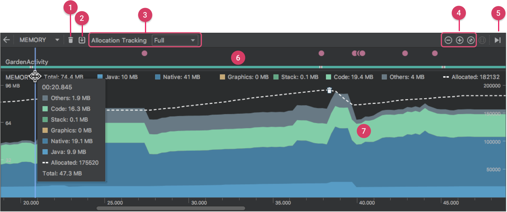

帧动画：消耗资源最多
Systrace
1 | 功能： |
内存
内存抖动：短时间内大量对象创建，它伴随频繁的GC
1 | var str = "" |
内存抖动：频繁的GC导致线程挂起，程序阻塞，从而形成卡顿
OOM：内存不连续，内存碎片，
内存抖动
Profile as自带的工具，
FinalizeRefrence ：内存回收的类
1 | //避免抖动： |
内存泄漏
1 | 程序中已动态分配的堆内存由于某种程序未释放或者无法释放，造成系统内存的浪费。 |
可达性分析法：判断对象是否可以被GC
1 | 通过一些列称为“GC Roots”的对象为起始点，从这些节点向下搜索，搜索所有的引用链， |
引用：
1 | 强引用：JVM 宁可抛出 OOM ，也不会让 GC 回收具有强引用的对象 |
1 | /** |
1 | /** |
场景：Handler发送一个延迟消息，
1 | class TestActivity : AppCompatActivity() { |
将非静态内部类转为静态内部类 + WeakReference（弱引用）的方式
1 | class TestActivity : AppCompatActivity() { |
- 如何避免内存泄漏
1 | 1:不要在匿名内部类中进行异步操作 |
Profile工具使用
1 | 如上图所示，内存分析器的默认视图包括以下内容： |
1 | 导出文件的格式为: |
MAT
1 | 一个基于Eclipse的内存分析工具，是一个快速、功能丰富的JAVA heap分析工具，它可以帮助我们查找内存泄漏和 |